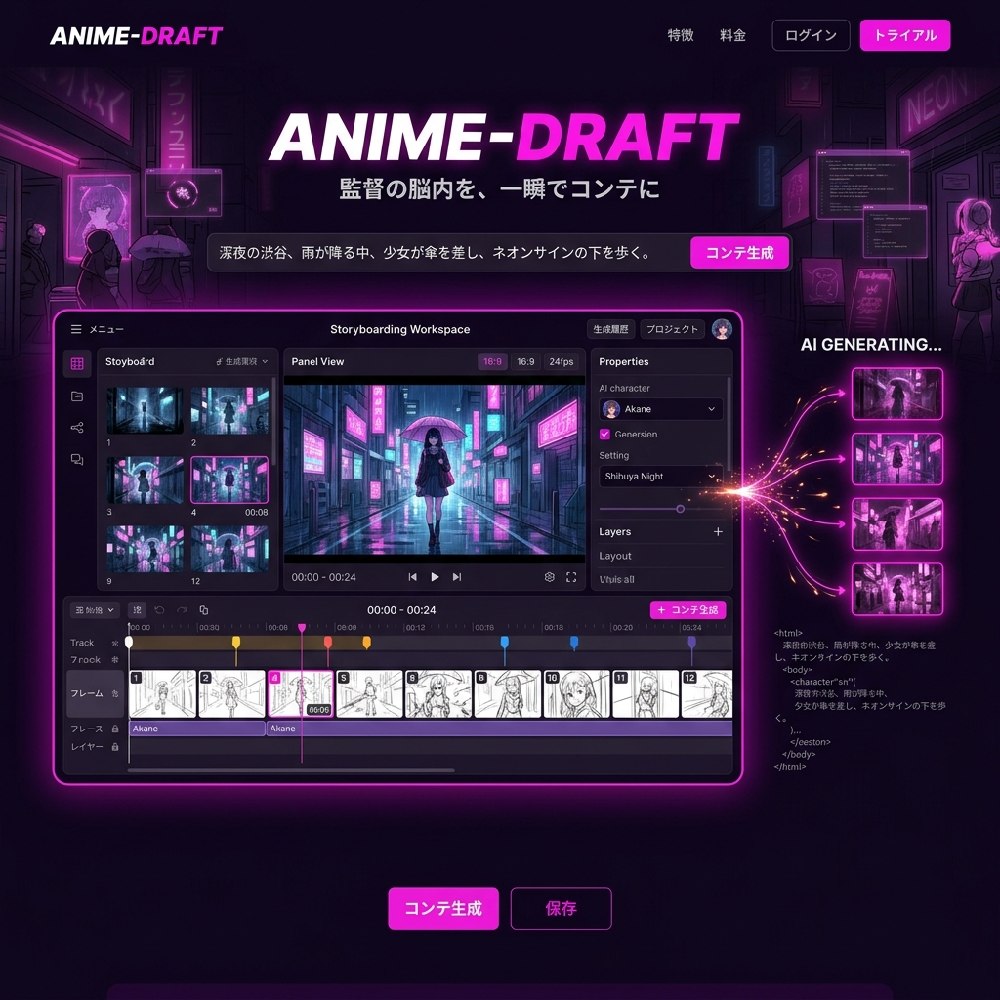

監督の脳内を、
一瞬でコンテに変換する。
テキストのプロットや脚本を入力するだけで、カット割り、カメラワーク、キャラクターの構図をAIが自動生成。日本のアニメ制作パイプラインを破壊的に加速させる魔法のツール「ANIME-DRAFT」。

アニメ制作の最深部にあるボトルネック
日本のアニメ産業は世界を席巻していますが、その制作現場は過酷です。特に「絵コンテ」は監督やトップアニメーターの属人的な作業であり、1話分を描き上げるのに数週間〜数ヶ月を要します。ここが詰まることで、全体のスケジュールが崩壊するのです。
言語から映像へのダイレクト・トランスレーション
脚本解釈AI
「夕暮れの教室、窓辺で黄昏れる少女。カメラはゆっくりと引き…」というト書きから、最適な画角やライティングを理解し、画像を生成。
一貫性のあるキャラクター保持
事前のキャラクターデザイン設定を読み込ませることで、全カットで同一人物の顔立ちや服装を正確に維持したコンテを出力。
カメラワーク・尺の自動計算
PAN（パン）やT.U（トラックアップ）などの指示をメタデータとして付与し、ビデオコンテ（Vコン）としてのプレビューも即座に生成。
人間のクリエイティビティを奪わない設計
ANIME-DRAFTはアニメーターから仕事を奪うものではありません。AIが生成したコンテはあくまで「叩き台（ドラフト）」。キャンバス上でペンを使って直接加筆修正したり、カットの順番をドラッグ＆ドロップで入れ替えたり、人間の演出意図を柔軟に反映できるUIを備えています。
チーム全体でのリアルタイム同期
生成されたコンテはクラウド上で即座に共有されます。作画監督、美術設定、音響監督が同じコンテを見ながら、カット単位でコメントを残したり、修正指示（リテイク）を出すことが可能。アナログな紙のやり取りを完全に撤廃します。
Case Study | 新進気鋭のアニメスタジオ
オリジナルTVアニメの制作において導入。監督が深夜に思いついたアクションシーンのアイデアを、その場でテキスト入力してコンテ化。翌朝の会議で即座にチームに共有し、コンテ作業にかかる時間を従来の1/3に短縮。クリティカルな演出の推敲に時間を割けるようになりました。
アニメ産業を、次のステージへ
労働環境の改善と、圧倒的なクオリティの両立。ANIME-DRAFTはテクノロジーの力で、日本のクリエイターが「本当に創りたかったもの」に集中できる環境を提供し、世界へ発信する力を底上げします。